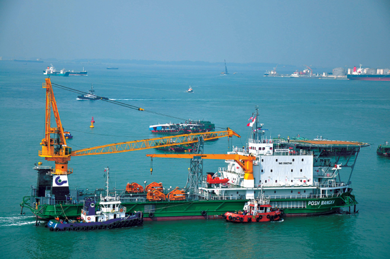
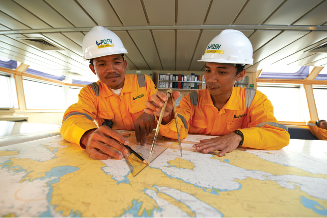

Annual Report 2018
our business
Annual Report 2018
our business
© 2019 Copyright. All rights reserved. PACC OFFSHORE Services Holding Ltd
DOWNLOAD FULL REPORT REQUEST FOR PRINT COPYFor the financial year ended 31 December 2018 (“FY2018”), POSH reported a 56% year-on-year (“YoY”) increase in revenue to US$299.4 million on higher contribution across all four main business segments, especially from the offshore accommodation division. This in turn enabled POSH to record a gross profit of US$33.0 million for the year, compared to a gross loss of US$13.4 million from the previous financial year.
The Group’s share of results from joint ventures registered a loss of US$8.6 million for FY2018, compared to a profit of US$2.4 million for FY2017. This was mainly due to lower contribution from POSH Terasea, partially offset by the lower impairment of its vessels of US$6.7 million compared to US$15.5 million for the previous financial year.
Amid continued challenging conditions across the industry, the Group booked non-cash impairments of US$49.5 million on vessels. The amount of impairment was significantly reduced from the US$165.4 million of non-cash impairments made on goodwill (US$57.1 million) and vessels (US$108.3 million) for FY2017.
Correspondingly, the Group reduced its net loss attributable to shareholders (“NLAT”) by 57% to US$98.3 million, from U$230.3 million in the previous corresponding period. Excluding the impact from the impairments and loss on asset disposals, core NLAT would have been US$48.2 million.
POSH generated positive operating cash flows of US$27.5 million for FY2018. Finance costs increased by 28% to US$29.2 million (FY17: US$22.8 million) mainly due to higher loan balances and interest rates, and the Group’s net current liabilities of US$200.6 million mainly arose from the utilisation of short term bank borrowings. Net gearing stood at 2.1 times as at the end of December 2018.
Net asset value was US$363.9 million and fixed assets decreased by US$107.3 million primarily on the impairment taken and depreciation expenses for the Group’s vessels.
Offshore Supply Vessels (“OSV”):
The OSV segment improved revenue and utilisation YoY for FY2018, even as this sector of the industry remains the most depressed. Revenue grew 23% to US$91.9 million and utilisation improved to 72% from 64% in the previous year. Correspondingly, the segment narrowed gross loss to US$9.4 million from US$11.1 million for FY2017.
The improvement in the OSV segment is primarily due to the contribution of our 12 OSVs on long-term charter to a National Oil Company in the Middle East. During the year, all 12 vessels achieved 100% utilisation, demonstrating our strong operational performance and service reliability.
Since oversupply in the OSV segment is expected to sustain over the medium term, we capitalised on opportunities to re-deploy suitable OSVs to higher demand sectors. We successfully converted and repurposed one OSV to an accommodation walk-to-work support vessel, and another for Remote Operating Vehicle (“ROV”) operations support. As a result, both vessels were awarded more lucrative and longer period charters.
We also divested two six-year-old 8,000 BHP Anchor Handling Towing and Supply (“AHTS”) vessels for US$13.0 million.
Offshore Accommodation (“OA”):
The OA segment remained a bright spot for the Company, putting in a strong performance for FY2018. Revenue more than doubled to US$166.9 million from US$81.8 million the previous year. This was mainly due to the contribution from its two class-leading semi-submersible accommodation vessels (“SSAVs”) – POSH Arcadia and POSH Xanadu – which were deployed to support the hook-up and commissioning campaigns of the Shell Prelude Floating Liquefied Natural Gas (“FLNG”) facility and Chevron Big Foot Tension Leg Platform (“TLP”) respectively.
POSH Arcadia and POSH Xanadu completed their charters with near 100% gangway uptime and zero Lost Time Injury. The project teams received commendations from clients for their seamless coordination and consistent operational and safety standards.
Immediately after the completion of the Chevron Big Foot TLP campaign, POSH Xanadu underwent a short refurbishment in a nearby port, and mobilised to the Campos Basin in Brazil to support production activities for Petrobras. She will be deployed in offshore Brazil for eight to 16 months. This is the second charter for POSH Xanadu with Petrobras, after the initial two-year Brazilian campaign which had commenced in 2015.
Charter rates and utilisation for OA’s monohull fleet firmed up over the last few months of FY2018. Specifically in 4Q2018, the seven monohull OA vessels achieved 90% utilisation. These accommodation and walk-to-work charters are supporting both offshore topside maintenance as well as construction work for new oil field development.
During the year, we retrofitted a Saturation (“SAT”) and Air Dive System aboard one of our accommodation barge, and successfully converted her to a Dive Support Vessel (“DSV”) for Subsea Umbilicals, Risers & Flowlines (“SURF”) operations. Concurrently, Posh Subsea was awarded its maiden SURF contract by a major offshore contractor in South Asia.
Transportation & Installation (“T&I”):
The T&I segment’s revenue grew by 26% to US$17.7 million (FY2017: US$14.0 million) on higher vessel utilisation of 62% (FY2017: 40%). Correspondingly, the division booked gross profit at US$0.6 million compared to gross loss of US$0.4 million a year ago.
In the deepwater space, POSH Terasea successfully executed two long-distance ocean towage contracts for Petrobras’ P-75 and P-77 Floating Production Storage and Offloading (“FPSO”) from Dalian, China to Rio Grande, Brazil. Having successfully completed the T&I of the world’s first FLNG, Petronas FLNG Satu in 2016, POSH was awarded the T&I contract of Petronas’ second FLNG Dua. This is the second consecutive FLNG T&I contract we have secured to support Petronas, and we are excited to be executing it in 2020.
Anchor Handling Tug (“AHT”) POSH Pahlawan was deployed to support the first of several contracts won by the Group’s POSH Kerry Renewables (“POSH Kerry”) joint venture. The vessel assisted an international geotechnical services operator in the site survey and preparatory work prior to windfarm construction.
Besides making inroads into offshore renewables, the team secured a contract from a major Chinese offshore engineering firm for another spread of 10 vessels for their pipeline replacement project in the Middle East to be executed in FY2019.
Harbour Services & Emergency Response (“HSER”):
Harbour towage and heavy lift activities were subdued in Singapore due to lower offshore construction and conversion in both local and regional shipyards. The number of ships calling into Singapore also registered a 3% decline. Despite this, our HSER segment registered a 7% increase in revenue to US$23.0 million (FY2017: US$21.4 million) as we were able to secure several long term charters for our harbour tugs overseas, in Sri Lanka, Senegal, Vietnam and Malaysia.
However, gross profit was lower at US$3.3 million for FY2018, compared to US$4.4 million for the previous year, given lower margins for both heavy lift and harbour towage operations. For harbour towage, the reduced margins were mainly contributed by an increase in bunker and charter-in expenses.
We have been successful to secure exclusive contracts with several major heavy lift vessel operators. We are proud to support an international contractor with our crane barge L501, which was a key contributor to complete the expansion project for the Thilawa Port in Myanmar.
Whilst the outlook remains challenging, POSH is committed to seek new opportunities for expansion and growth. In 2018, we made good headway into the subsea and offshore renewables segments. With the momentum for wind farm developments in Taiwan entering into full swing and activity levels increasing for subsea tie-backs and greenfield development, the two new business segments bring exciting prospects to POSH.
We will continue to identify and repurpose suitable vessels for work in higher demand sectors including subsea, offshore renewables and offshore accommodation. In this regard, we have planned for investments in specialised equipment, such as the SAT Dive System and walk-to-work gangway, that will be retrofitted on select vessels. This approach minimises capital outlay even as we grow our revenue streams.
Our efforts on various fronts will enlarge our solutions portfolio and position us as a truly integrated solutions provider to our clients. In the coming year, we will actively expand our local presence in key oil and gas bright spots – Africa, Asia and Middle East. With a stronger local network, we are confident of forging stronger client partnerships as we better understand their needs and customise our solutions to their unique requirements.